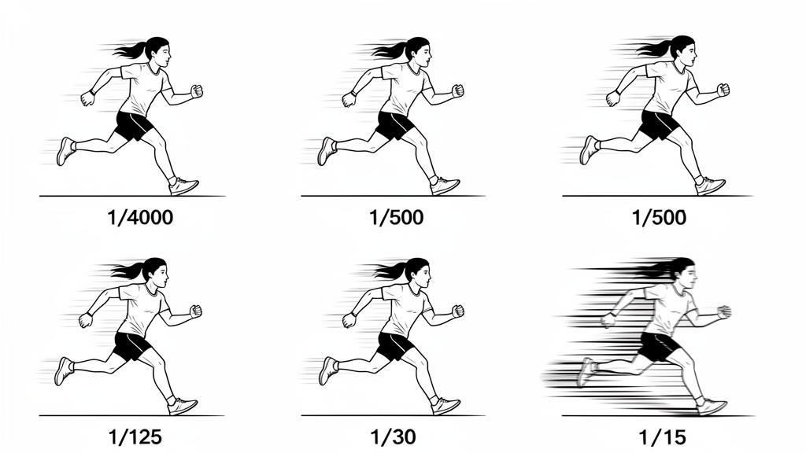

Master shutter speed to freeze action, create artistic motion blur, and master the panning technique.

Freeze a jump, blur a car, pan a bike. Three shots: (1) Jump frozen at 1/500+, (2) Car blurred at 1/30, (3) Cyclist panned at 1/30 with sharp subject + streaked background. Upload all 3.